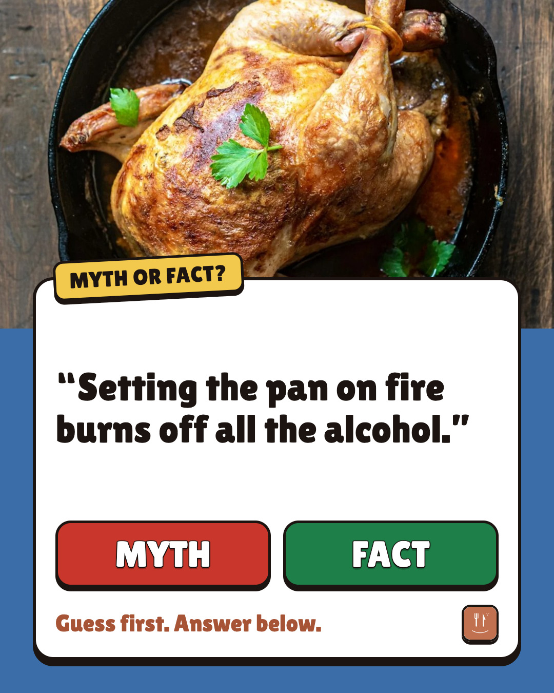

Setting the pan on fire burns off all the alcohol. · made 2026-10-27T04:30:51.884Z · run cost $0.000

The flames look like they take it all. Guess first, the answer is below. Answer: Myth USDA found about 75% of the alcohol still in the food after flaming. Source: USDA Nutrient Retention Factors, Release 6 Cooking halal or without wine? RecipeFix swaps it out and rewrites the steps. #cookingtips #foodscience #kitchenmyths #recipefix
media: runs/2026-10-27/image-myth-flambe/slides/image-01-question.jpg
The flames look like they take it all. Answer in the reply. #cookingtips #foodscience #recipefix
thread:
Answer: Myth USDA found about 75% of the alcohol still in the food after flaming. Source: USDA Nutrient Retention Factors, Release 6
media: runs/2026-10-27/image-myth-flambe/slides/image-01-question.jpg
The flames look like they take it all. Answer in the reply. #cookingtips #foodscience #recipefix
thread:
Answer: Myth USDA found about 75% of the alcohol still in the food after flaming. Source: USDA Nutrient Retention Factors, Release 6
Cooking halal or without wine? RecipeFix swaps it out and rewrites the steps.
media: runs/2026-10-27/image-myth-flambe/slides/image-01-question.jpg
Myth or fact: "Setting the pan on fire burns off all the alcohol." Answer in the reply. #cookingtips #foodscience #recipefix
thread:
Answer: Myth USDA found about 75% of the alcohol still in the food after flaming. Source: USDA Nutrient Retention Factors, Release 6
media: none
ALC BEV,FLAMED … 75
| PASS | image-1:file | jpeg 1080×1350 |
| PASS | image-1-question:still.canvas | 1080×1350 |
| PASS | image-1-question:still.text_readback | 5 lines held to read-back, min similarity 1.00; 0 single-glyph lines checked by eye only (OCR vision: 19 words, file: 24 words, inverted: 22 words, rules removed: 22 words, white-text mask: 17 words, dark-text mask: 21 words) |
| PASS | image-1-question:still.no_artefacts | no [object Object] / undefined / NaN / braces read on the image |
| PASS | image-1-question:still.safe_zone | 17 word boxes inside x 60–1020, y 60–1290 |
| PASS | image-1-question:still.text_overlap | no two intended lines overprint each other |
| PASS | image-1-question:still.text_size | every line's median OCR word height ≥ 22px |
| PASS | image-1-question:still.contrast | min 5.39:1 over 17 word boxes (WCAG AA 4.5:1) |
| PASS | photo.aspect:photo-lemon-herb-roast-chicken-1080x640.jpg | crop 1600×948 (aspect 1.6878) drawn at 1080×640 (1.6875); downscale only |
| PASS | copy.platform_rules | lengths, X titles, no link in the X post, 3–5 hashtags incl. #recipefix, no forbidden claims, no bait, reads human |
| PASS | knowledge.product_posts | pack ad17c991 has a release receipt |